Blot lab — ink forensics, second pass
Every bolding, partial spill, and blackout in the coded-letters corpus was compared ink-against-ink with its own surrounding words. Verdict: the marks are the writers’ own work — same-session emphasis, pen drips, and self-redaction. Nothing indicates a later hand.
chederis retraced — same ink
Emphasis, not a later hand.
Same hue as the line, 1.4–1.5× darker, 1.43× wider strokes: the classic double-application signature. Timing (same sitting vs. later, same pen) is not datable from ink alone.
Accidents, same session.
The blot over Jo[el?]
, the gray smudge, and the dark speck all match the surrounding ink’s hue. Heavy, wide, same color: a wet pen, not a redactor.
Self-censorship, in the same sitting.
Letters 53 and 54’s blacked-out passages share the letters’ ink hue, laid on heavy and wide. Consistent with the authors blacking out their own words as they wrote.
Deris darker and bluer
Heavy re-dip — or a different pen.
The only mark whose hue shifts with its darkness. A heavy same-pen re-dip would do exactly this to blue ink, but a different pen cannot be excluded. Inconclusive.
Ink color cannot be carbon-dated from a photo. What it can do is far more useful here: tell whether a mark was made with the same pen and ink as the surrounding writing, or a different one.
For each mark, ink pixels were sampled in CIELAB and expressed relative to the local paper color from the same photo: darkness depth dL = paperL − inkL, and chromaticity da, db vs. paper. Distance dP is the Euclidean distance between two paper-relative signatures. Stroke width comes from a distance transform on the ink mask. Because every comparison is intra-photo (mark vs. neighboring words in the same image), lighting, exposure, and white balance cancel out — which matters, because the top of letter 33’s first page is overexposed to clipping while its middle reads normally.
Decision rule, stated before running: umlaut dots, i-dots, and neighboring ordinary words calibrate the same ink
band; the third author’s blue marginalia (a known different hand) anchors the different ink
end. Retracing = same hue + ≥1.35× darker + ≥1.4× wider strokes.
Every working image was checked: 0 EXIF tags on all letter photos and crops. The Apple Notes scan-to-PDF pipeline and the crop exports stripped all exposure and white-balance metadata; the PDF renders carry only resolution and orientation tags. There is therefore no EXIF to normalize by — and none is needed, since the paper-relative intra-photo comparison is immune to per-photo lighting differences by construction. Cross-photo absolute color comparison was not attempted and would not be valid.
Different ink
means a different pen, or the same pen in a much later session — color alone cannot separate those. Same ink
rules out a different pen but not a later touch-up with the same pen. Water damage and foxing were avoided by bounding-box placement, and every annotated figure below was visually verified box-by-box (two misplacements — a page-edge shadow caught in a für
box, a wrong line in an umlaut crop — were found this way and corrected before measuring).
Tiny supra-letter marks are the perfect calibrators: if the method is sound, a genuine umlaut dot must match its own word — and then the same test tells diacritics apart from stray spills, and confirms readings against m/n confusion.
durchführen,
für,
die
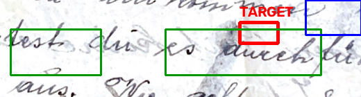
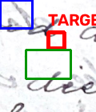
durchführenand the i-dot of
dieare the writer’s own diacritics.
| Mark vs. its word | dP | hue | reading |
|---|---|---|---|
ü-dots vs für | 7.07 | match | same ink |
i-dot vs die | 8.72 | match | same ink |
ü-dots vs durchführen | 25.18 | match (dC=3) | same pen, light touch |
The durchführen
dots are lighter than the word body (quick pen touches take less ink) but identical in hue — the calibration behaves exactly as a same-pen mark should. Consequence for readings: a mark above a u
whose signature matches the word is a diacritic, not a spill and not part of a neighboring letter. That is how für
, durchführen
, and die
are confirmed against m/n misreadings: the dots belong to the words.
Control: the third author’s blue marginalia (reversed writing in the top margin, a known different hand) scores dP = 52–58 against Josef’s ink — the method cleanly separates different inks. Ordinary neighboring words vary at dP = 1–25, driven by pen wetness, not hue.
Words that look darker than their line: retracing (going over the word twice) or a fresh pen dip?
chederretraced in darker ink retraced, same ink
gehen die fleißig in die Schule wie auch cheder
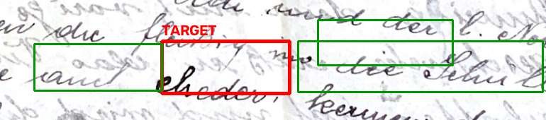
chederagainst its line-mates
wie auch,
die Schule,
können die Kinder.
| cheder vs | dP | darker × | wider × |
|---|---|---|---|
Schule | 24.21 | 1.38 | 1.43 |
wie auch | 31.03 | 1.54 | 1.43 |
können die Kinder | 25.20 | 1.40 | 1.00 |
Hue is identical to the line (chroma distance ≈3); the word is 1.4–1.5× darker with 1.43× wider strokes. That is the double-application signature: the writer went over cheder
a second time with the same pen. Emphasis — deliberate, by the author. Whether it happened mid-letter or on a later re-reading with the same pen is not datable from ink alone, and the ink does not choose between those.
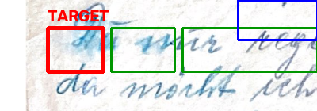
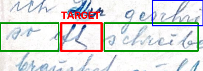
Du(
Du mir regelmäßig) and
Der(
ich Der geschrieben habe), the two visibly darker blue words.
| Mark vs. neighbors | dP | darker × | verdict |
|---|---|---|---|
Duvs mir | 2.45 | 0.96 | same ink, fresh dip |
Dervs geschrieben | 27.73 | 1.51 | heavy; bluer — inconclusive |
Dervs ich | 33.44 | 1.70 | heavy; bluer — inconclusive |
Du
is indistinguishable from mir
two words later: a line-initial fresh dip, same pen, same sitting. Der
is the corpus’s odd one out — 1.5–1.7× darker, 1.43× wider strokes, and shifted bluer (db −14 vs −8). A heavy same-pen re-dip deposits more blue dye and would look exactly like this, so same-pen emphasis remains plausible; but unlike cheder
, the hue shift means a different (bluer) pen cannot be excluded. The one mark in the survey where added later with another pen
survives as a live alternative.
Small ink accidents: pen drips and smears, tested against the words they sit in.
Jo[el?]is the writer’s own drip same pen, accidental
Ist Jo[blot] schon in Amerika
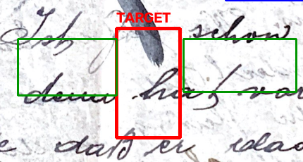
Ist Joand
schon; the name’s ending is lost under the writer’s own pen.
| Blot vs | dP | darker × | wider × |
|---|---|---|---|
Ist Jo | 33.26 | 1.39 | 1.70 |
schon in | 40.32 | 1.51 | 2.43 |
Same hue as the line (chroma distance ≈4), much heavier and wider: a drip from the same pen, mid-word, same session. The obscured name ending is an accident of writing, not a redaction — nobody came back later to hide it.
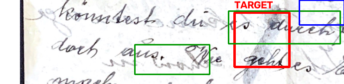
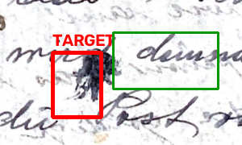
durchführenand the dark speck by
demnächst.
| Mark vs. neighbor | dP | verdict |
|---|---|---|
smudge vs durchführen | 4.24 | same ink — wet-pen smear |
speck vs demnächst | 50.04 | same hue, heavy — pen spatter |
The smudge is chemically identical to durchführen
beside it: the pen smeared while the ink was wet. The speck shares the line’s hue at 1.54× darkness and double width — spatter from the same pen, same sitting.
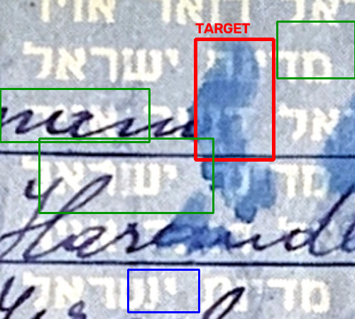
man/
Hers…and the printed Hebrew microtext.
| Dab vs | dP | verdict |
|---|---|---|
handwriting Hers… | 15.07 | much bluer (db −25 vs −12) |
handwriting man | 34.23 | different |
| printed microtext | 41.93 | different |
The dab is a dilute blue wash, far bluer than either the handwriting or the print — a spill of diluted ink or a different blue pen, not a writing stroke. It carries no letterforms (as established in the earlier pass): a spill, not a message, and not the author’s writing pen.
Deliberate marks: were the redactions made with the letter’s own pen?
für Malw…); letter 54 (closing-line blackout)
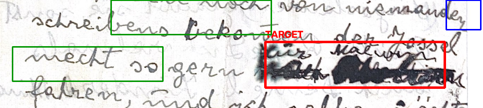
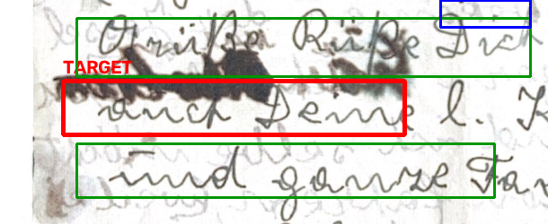
| Blackout vs. neighbors | dP | darker × | wider × |
|---|---|---|---|
53 vs bekommen der Jossel | 79.18 | 1.79 | 3.0 |
53 vs mecht so gern | 75.19 | 1.72 | 3.0 |
54 vs Grüße Küsse vielmals | 27.00 | 1.26 | 1.64 |
Both blackouts share their letter’s ink hue (53: chroma distance ≈5; 54: hue identical), laid on 1.3–1.8× darker and up to 3× wider — multi-pass scribbling with the writing pen. The economical reading is the one the coded-language pass already reached: the authors blacked out their own words, in the same sitting. A censor’s later pen would have no reason to match the hue; a blacker pen cannot be strictly excluded for 53, but nothing requires it.
Dankendsqueezed in with the same pen same ink, same sitting
erhalten
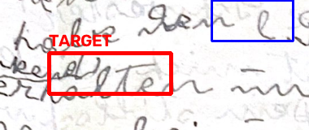
Dankendinserted above the line between
von Euchand
erhalten.
Dankendvs | dP | verdict |
|---|---|---|
von Euch | 5.10 | same ink |
Freude | 7.07 | same ink |
Indistinguishable from the line it was squeezed into: a same-session insertion while writing, not a later correction.
Ausgelöstoverwritten, same ink same ink
sollen schon Alle Ausgelöst werden
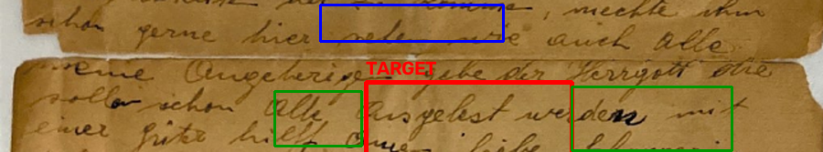
Ausgelöstwritten over an earlier word.
Ausgelöstvs | dP | verdict |
|---|---|---|
Alle | 2.45 | same ink |
The overwrite matches Alle
beside it almost exactly: corrected with the same pen, in the same sitting.
Fourteen of fifteen marks resolve to the writer’s own pen: emphasis retracing (cheder
), fresh dips (Du
), same-session insertions (Dankend
, Ausgelöst
), pen drips and smears (the Jo
blot, the smudge, the speck), and self-redaction (both blackouts). The fifteenth, the aerogramme dab, is a spill of a different blue — an accident of handling, not a later hand’s message. The known-different control (the third author’s marginalia) separates cleanly, so the method is not simply calling everything “same.”
The one genuine ambiguity is letter 42’s Der
: heavier and bluer than its line. Same-pen heavy emphasis and a different pen remain both live. Everything else the ink can say points one way: the marked-up words were marked up by the people who wrote the letters, and nothing in the ink suggests anyone came back later to add, hide, or emphasize.
scripts/ink_age.py holds the case list (bounding boxes in source pixels), the paper-relative sampler, and the figure annotator. img/passes/ink-age/ink-age-measurements.json holds every measurement; fig-*.png in the same directory are the annotated figures, each visually verified. Source renders: img/passes/ink-age/33-p0.png, 42-p0.png, 53-p0.png, 54-p0.png (2× renders of img/onionskin-survey/{33,42,53,54}.pdf), plus img/source/aerogramme-blot-dabs.jpg and the coded-language crop of letter 44.